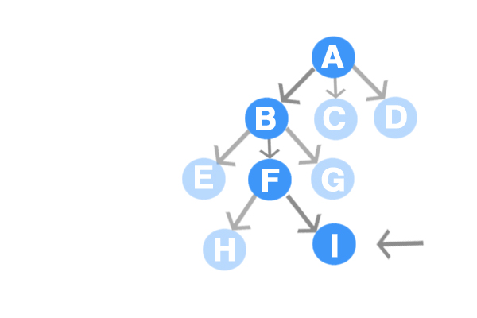

This section shows how an informed search strategy - one that uses problem-specific knowledge beyond the definition of the problem itself - can find solutions more efficiently than can an uninformed search strategy.
The general approach we consider is called best first search. Best-first search is an instance of the general Tree-Search or Graph-Search algorithm in which a node is selected for expansion based on an evaluation function, f(n). The evaluation function is construed as a cost-estimate, so the node with the lowest evaluation is expanded first. The implementation of best first graph search is identical to that for Uniform-Cost Search, except for the use of f instead of g to order the priority queue.
The choice of f determines the search strategy. Most best-fit algorithms include as a component of f a heuristic function denoted h(n):
h(n) = estimated cost of the cheapest path from the state at node n to a goal state.
Notice that h(n) takes a node as an input, but, unlike g(n) it depends only on the state at that node. For example, one might estimate the cost of the cheapest path from Arad to Bucharest via the straight-line distance from Arad to Bucharest.
Heuristic functions are the most common form in which additional knowledge of the problem is imparted to the search algorithm. We also consider them to be arbitrary, nonnegative, problem specific functions, with one constraint: if n is a goal node, then h(n)=0. Following are two ways to use heuristic information to guide search.
Greedy best-first search tries to expand the node that is closest to the goal, on the grounds that it is likely to lead to a solution quickly. Thus, it evaluates nodes by using just the heuristic function; that is, f(n)=h(n).
Let us see how this works for the route-finding problems in Romania; we use the straight-line distance heuristic, which we will call hSLD. If the goal is Bucharest, we need to know the straight-line distances to Bucharest, which are shown in Figure ISS-1:
